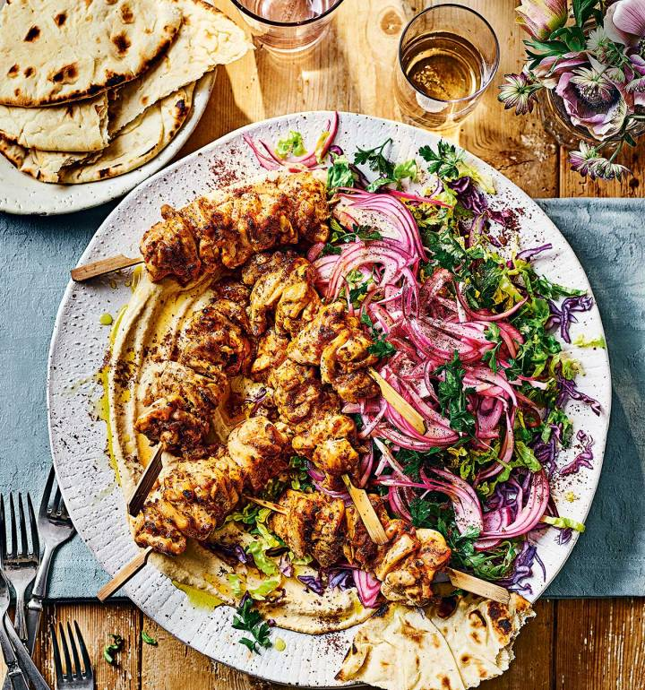

Kebab Recipe

Step by Step
-
Trim the chicken and cut into roughly 2.5cm cubes. Chuck it into a non-metallic bowl and add the mayonnaise,
the juice of half a lemon, the tomato purée, oregano, Turkish pepper flakes (or chilli) and a good pinch of salt.
Crush in 2 cloves of garlic and mix everything together really well. Cover and leave to marinate for 1 hour, or overnight in the fridge.
If using wooden skewers, soak them in water for at least 30 minutes before using.
-
Preheat the grill to high and thread the chicken pieces onto the skewers. Grill for 4-5 minutes on each side or until golden and cooked through.
-
Meanwhile, chuck the onion into a bowl and add the juice of 1 lemon and a good pinch of salt. Mix well and leave to macerate, tossing occasionally,
for 10 minutes. Add the parsley and mix well.
-
To make a houmous, drain the chickpeas and keep the chickpea liquid from the tin. Put the chickpeas, 100ml of the chickpea liquid, the juice of 1 lemon,
the last clove of garlic, the tahini and a good pinch of salt into a food processor and blend until smooth. If it looks a little dry or thick, add a splash
more of the chickpea liquid.
-
Swirl the houmous onto a huge serving platter and drizzle over a little olive oil. Heap up the kebabs on the platter, squeeze over the juice of the remaining
half a lemon and season with a little salt. Pile up the shredded cabbage and Little Gem, make a big old mound of the onions and scatter sumac all over the top.
Serve immediately with plenty of flatbreads.
Ingredients
- 1 x 640g pack skinless, chicken thigh fillets
- 60g mayonnaise
- 3 lemons
- 2 tsp tomato purée
- 2 tsp dried oregano
- 1 tsp Turkish pepper flakes* (Aleppo) or 1⁄2 tsp regular chilli flakes
- 3 garlic cloves
- 1 red onion, finely sliced
- a handful of roughly chopped parsley leaves
- 1 x 400g tin chickpeas
- 120g tahini
- 1⁄4 red cabbage, shredded
- 1 Little Gem lettuce, shredded
- extra-virgin olive oil to drizzle
- about 1⁄2 tsp sumac
- warmed flatbreads, to serve
Nutrition (per serving)
- Calories (601Kcal)
- Fat (41gr)
- Saturates (6gr)
- Carbs (15gr)
- Sugars (5gr)
- Fibre (5gr)
- Protein (41gr)
- Salt (0.4gr)
Back to main menu